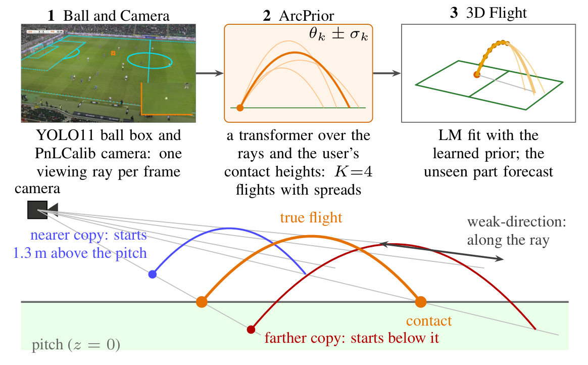

Overview
A single broadcast camera sees a soccer ball only as a point in the image. Every point fixes a viewing ray, but not how far along that ray the ball is, so a long, high flight far away and a short, low one close by can look the same. Sports analysis still needs the true 3D flight: does a cross clear the defenders, where does a long pass land? This project recovers physically valid 3D ball flights from ordinary match video, and also predicts the rest of a flight that is only partly seen.

Approach
- From video to rays. Published networks detect the ball and calibrate the camera in every frame, which turns each ball detection into a viewing ray.
- Contacts. The user marks the frames where the ball is kicked or bounces. Contact heights can be given if known, but are optional.
- Learned prior plus physics. A learned model proposes likely flights from the rays, and a physics solver (gravity, drag and spin) refines them so the result is a valid ball flight.
Results
Evaluated on the public match of Grad et al., the only one we know of with both broadcast video and 3D ball ground truth, using cross-validation over the two halves.
Interactive Demo
Nine test flights, each seen by the broadcast camera and five fixed cameras. Choose the flight, the camera, the inputs (ground truth or video), how much of the flight is seen and whether the contact heights are given. The video shows the detections, the pitch lines and each method's 3D path projected into the frame; the 3D view shows the same paths (drag to rotate, scroll to zoom). All outputs are precomputed. Footage from the dataset of Grad et al., shown for non-commercial research.
Loading the demo…
Limitations
All results come from one match. Contact frames are marked by hand. Most of the remaining error comes from missed detections and imperfect camera calibration, not from the flight model. Because the method only needs viewing rays, contact frames and a flight model, it can be applied to other ball sports.